Session 1 — Press the Chassis Plate Inserts
What you need
Steps
Find your parts: the Chassis Plate (the big long one), the 2 Chassis Plate Posts (small tubes with holes through the middle), and count out 10 brass inserts. Lay them out so nothing rolls away.
Get a grown-up to help set up the insert press with the M3 tip. This is the "adult part" of the job — presses can pinch fingers, so hands stay clear while it's running.
Press 1 insert into each Chassis Plate Post — 2 posts, 2 inserts. Keep the insert straight as it goes in, not tilted.
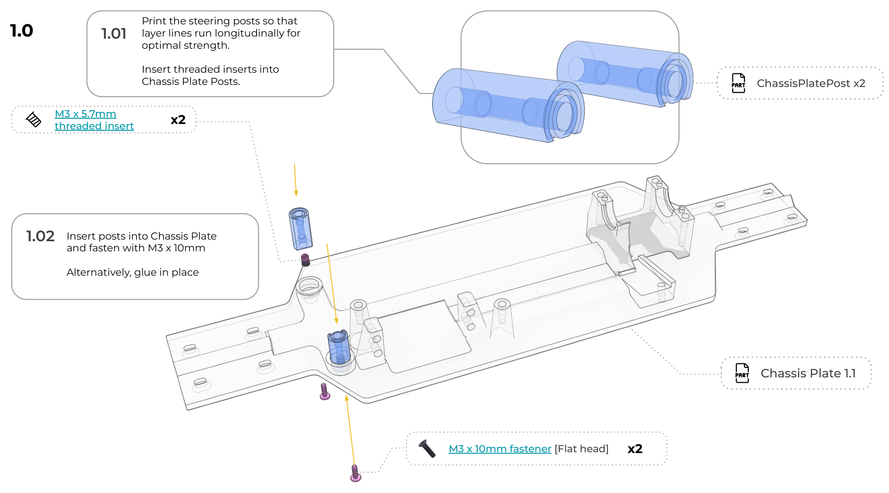
Press the remaining 8 inserts into the main Chassis Plate, at the holes marked in the guide's diagram below.
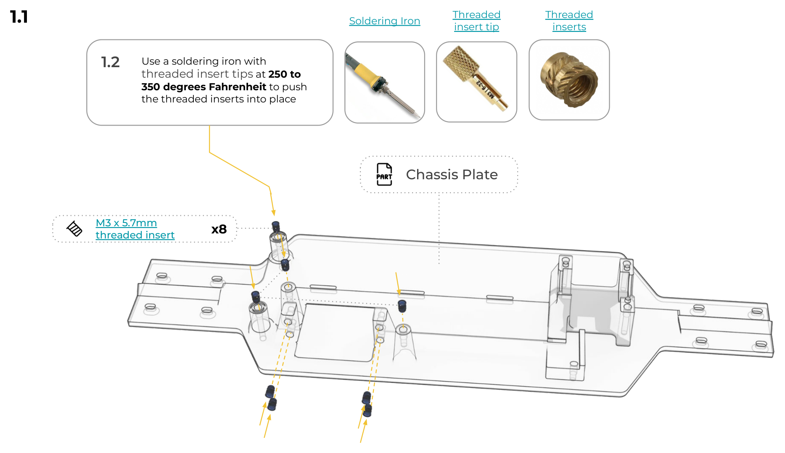
Check every insert: it should sit flush and straight, flat with the plastic, not leaning to one side. If one looks crooked, tell a grown-up — it's easier to back it out and redo it now than after the plate is full of other parts.
Put the finished Chassis Plate and both posts into a labeled bag — "Session 2: steering levers & dog bone" — so they're easy to find next time.
Session 2 — Steering Levers & Dog Bone
What you need
Steps
Fasten the two Chassis Plate Posts (from Session 1) onto the Chassis Plate using the M3×10mm flat head screws — or glue them in if you'd rather skip this set of screws for good.
Press 4 threaded inserts (M3×3mm) into Steering Lever R & L — 2 each — before either lever goes anywhere near the chassis.
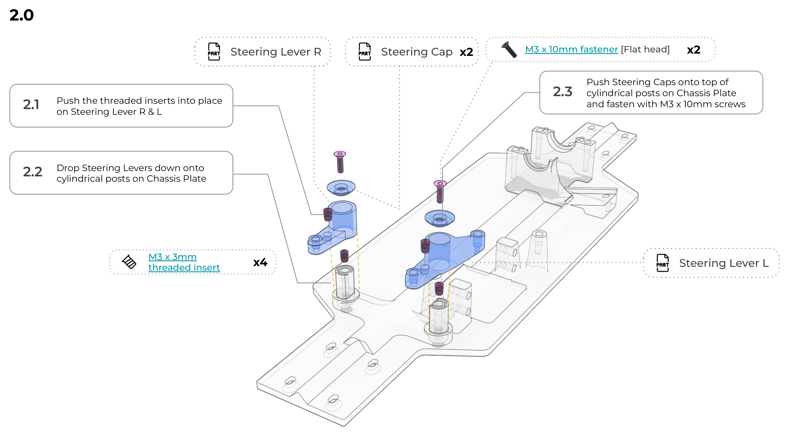
Drop both Steering Levers down onto the posts, then press a Steering Cap onto each post on top and fasten with an M3×10mm flat head screw.
Push a Steering Washer into each hole on the Dog Bone, flange side facing down — easy to do backwards, so double-check before moving on.
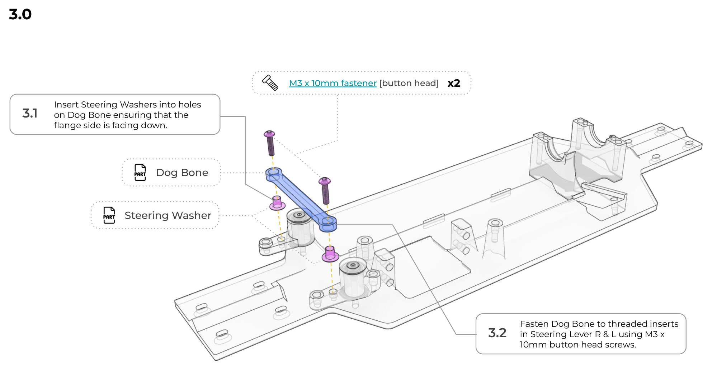
Fasten the Dog Bone between Steering Lever R and L using the two M3×10mm button head screws, threading into the inserts you pressed in step 2.
Check it: push the Dog Bone side to side. Both Steering Levers should swing freely and smoothly — no grinding, no stiff spots. If something binds, ask a grown-up to check the caps aren't overtightened.
Session 3 — Center Differential
What you need
Steps
If the ring gear isn't already attached to the diff case, a grown-up fastens it with the 4 included screws — a dab of threadlocker on each so they can't vibrate loose later.
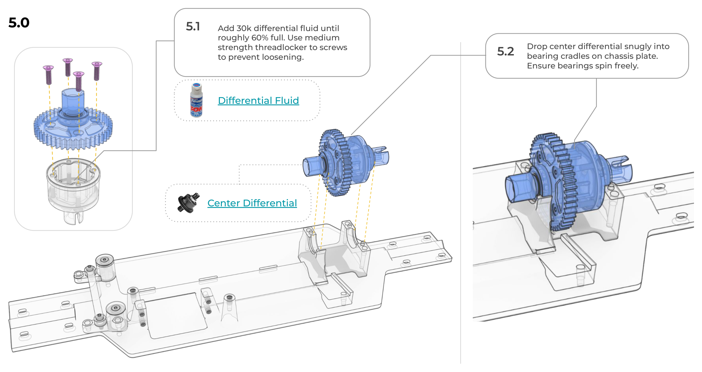
A grown-up fills the diff with 30k differential fluid to about 60% full — this is the thick fluid, not the shock oil.
Drop the filled center differential snugly into the two bearing cradles on the Chassis Plate. Give it a spin — it should turn smoothly with no grinding.
 🎥 Further learning
What is a Differential? — 3D Animation
Why does a car need this weird gear ball at all? Watch why the inside and outside wheels have to spin at different speeds in a turn.
🎥 Further learning
What is a Differential? — 3D Animation
Why does a car need this weird gear ball at all? Watch why the inside and outside wheels have to spin at different speeds in a turn.
Press 2 threaded inserts (M3×5.7mm) into the channels on the Driveshaft Long and Driveshaft Short — one each.
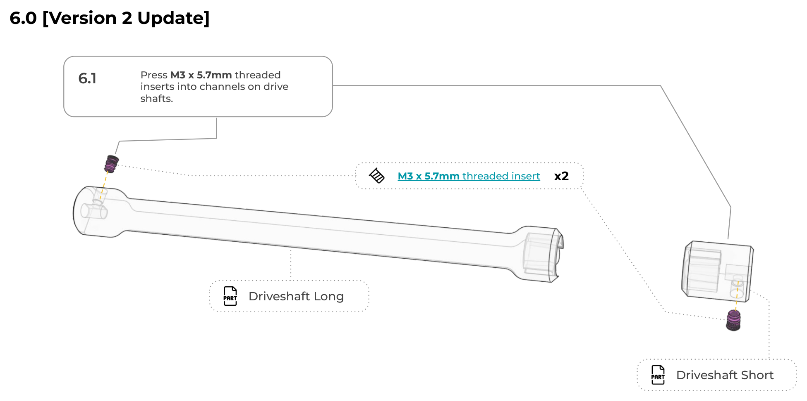
Press both driveshafts onto the center differential's cups, one on each side.
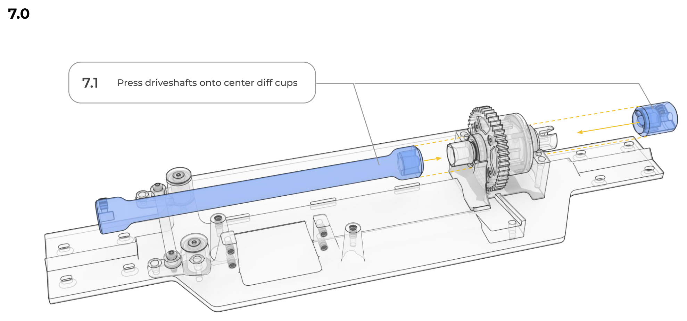
Session 4 — Front Differential
What you need
Steps
Press 4 threaded inserts (M3×5.7mm) into the holes on the bottom of the empty Front Lower Diff Case, before anything else goes in it.
A grown-up fills the front diff with 30k differential fluid to about 60% full, with threadlocker on its screws.
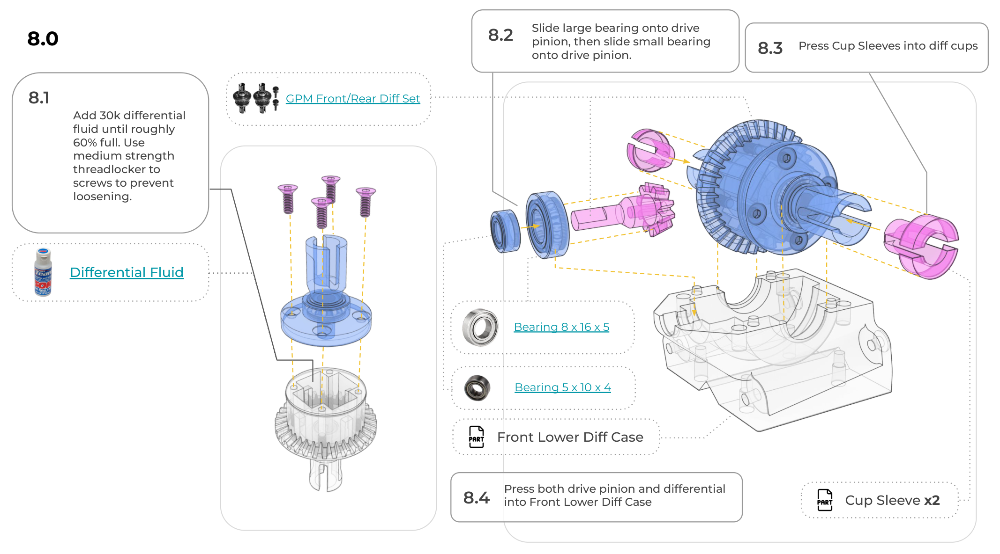
Slide the large bearing (8×16×5) onto the drive pinion, then the small bearing (5×10×4) onto the same pinion.
Press a Cup Sleeve into each of the diff's two cups.
Press both the drive pinion and the differential into the Front Lower Diff Case (the one with your 4 inserts already in it from step 1).
Dab white lithium grease where the pinion meets the driveshaft, then slide the whole assembly forward until the pinion is fully seated in the Driveshaft.
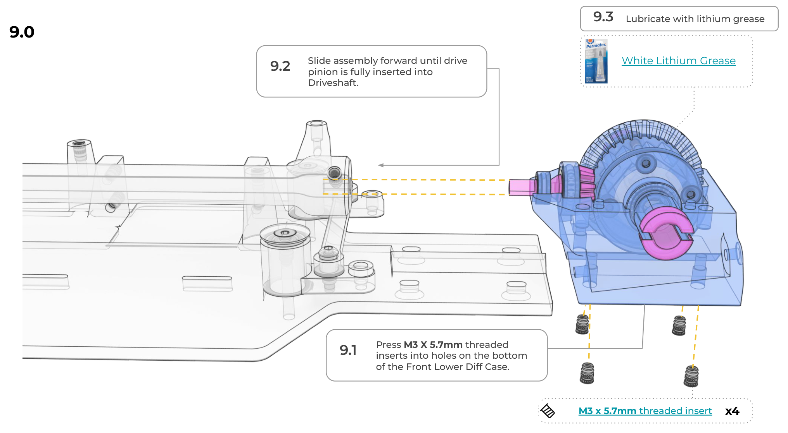
Check for a small gap between the shaft and the diff casing — then have a grown-up tighten the M3×8mm set screw firmly against the drive pinion.
Fasten the Diff Case to the Chassis Plate with 4 M3×10mm flat head screws. Loosen and slide the diff fore-and-aft if it needs adjusting, then tighten back down.
Session 5 — Rear Differential
What you need
Steps
Press 4 threaded inserts (M3×5.7mm) into the holes on the Rear Lower Diff Case, before anything else goes in it.
A grown-up fills the rear diff with 30k differential fluid to about 60% full, with threadlocker on its screws.
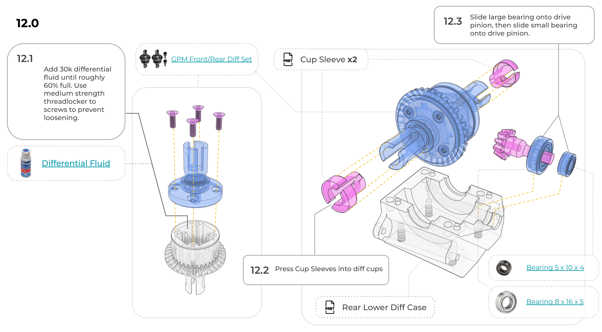
Slide the large bearing (8×16×5) onto the drive pinion, then the small bearing (5×10×4). Press a Cup Sleeve into each of the diff's two cups.
Press both the drive pinion and the differential into the Rear Lower Diff Case (the one with your 4 inserts already in it from step 1).
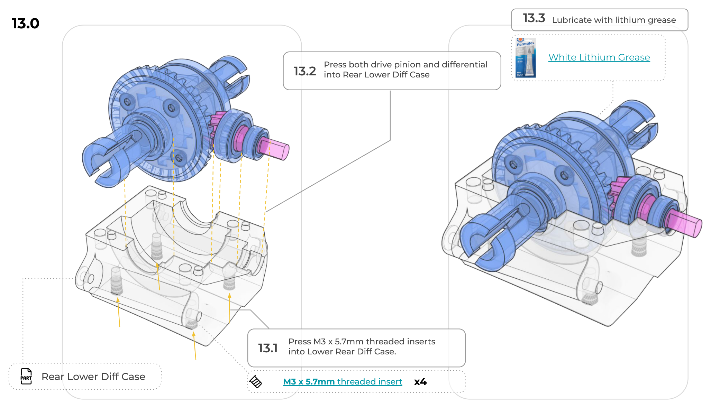
Dab white lithium grease where the pinion meets the driveshaft, then slide the assembly forward until the pinion is fully seated in the Driveshaft.
Check for a small gap between the shaft and the diff casing, then have a grown-up tighten the M3×8mm set screw firmly against the drive pinion.
Fasten the Diff Case to the Chassis Plate with 4 M3×10mm flat head screws. Loosen and slide fore-and-aft if it needs adjusting, then tighten back down.